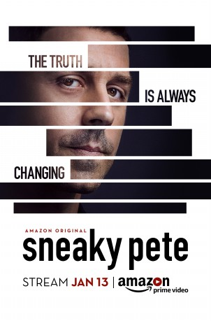

")
 
 IMDB-Wertung: 8.3 / 10
IMDB-Wertung: 8.3 / 10  Metascore:
Metascore: 
Ein Trickbetrüger auf der Flucht vor einem bösartigen Gangster versteckt sich, indem er die Identität seines Gefängnisgenossen Pete annimmt. Er „versöhnt“ sich mit Petes entfremdeter Familie. Doch seine neue Umgebung ist genauso gefährlich ist wie die, der er entkommen will - und dabei vielleicht doch zu der liebenden Familie wird, die er selbst nie hatte.
Jahr: 2015
Dauer: 54 Minuten
FSK: 12
Land: USA Studio: Amazon StudiosTonspuren: DD5.1 - ,
Untertitel: Deutsch, Englisch,
Auflösung: 720p (1280x720) Größe: 2181 MB
Regisseur: Sarah Pia Anderson, Michael Dinner, Seth Gordon,  Adam Arkin, Bryan Cranston,
Adam Arkin, Bryan Cranston,  Laura Innes, Michael Pressman, Rosemary Rodriguez, Craig Zisk, Cherie Nowlan
Laura Innes, Michael Pressman, Rosemary Rodriguez, Craig Zisk, Cherie Nowlan
Drehbuch: Bryan Cranston
Soundtrack:
Darsteller:
 Giovanni Ribisi als Marius Josipovic
Giovanni Ribisi als Marius Josipovic Marin Ireland als Julia
Marin Ireland als Julia Shane McRae als Taylor
Shane McRae als Taylor Michael Drayer als Eddie
Michael Drayer als Eddie Peter Gerety als Otto Bernhardt
Peter Gerety als Otto Bernhardt Margo Martindale als Audrey
Margo Martindale als Audrey Bryan Cranston als Vince
Bryan Cranston als Vince Victor Williams als Richard
Victor Williams als Richard Karolina Wydra als Karolina
Karolina Wydra als Karolina Jacob Pitts als Lance Lord
Jacob Pitts als Lance Lord Michael O'Keefe als Detective Winslow
Michael O'Keefe als Detective Winslow Mike Houston als Dennis
Mike Houston als Dennis Brad William Henke als Brendon
Brad William Henke als Brendon Kevin Chapman als Bo Lockley
Kevin Chapman als Bo Lockley Jay O. Sanders als Sam
Jay O. Sanders als Sam Chaske Spencer als Chayton Dockery
Chaske Spencer als Chayton Dockery René Ifrah als Wali
René Ifrah als Wali Terry Serpico als Hopper
Terry Serpico als Hopper Michael DeMello als Mikey
Michael DeMello als Mikey Benny Nieves als Luis Mercado
Benny Nieves als Luis Mercado Domenick Lombardozzi als Abraham Persikof
Domenick Lombardozzi als Abraham Persikof Debra Monk als Connie Persikof
Debra Monk als Connie Persikof Ethan Embry als Real Pete
Ethan Embry als Real Pete Tobias Segal als Sean
Tobias Segal als Sean Tonye Patano als Libby Metzger
Tonye Patano als Libby Metzger Colin Bates als Spike
Colin Bates als Spike Armando Riesco als Officer Inaba
Armando Riesco als Officer Inaba Finnerty Steeves als Counter Agent
Finnerty Steeves als Counter AgentDatei: X:\HD-Serien\Sneaky Pete S01\Sneaky Pete S01E01 Der verlorene Enkel.mkv seit 13.10.2017
Festplatte: HD Serien(I-ST)
 Es gibt insgesamt 182 Filme in der Gruppe 'HD-Serien'
Es gibt insgesamt 182 Filme in der Gruppe 'HD-Serien'